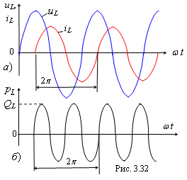

| Анализ мгновенной мощности в индуктивном элементе L показывает, что это знакопеременная функция, изменяющаяся с двойной частотой по отношению к частоте изменения напряжения uL и тока iL в цепи (рис. 3.32, б). Среднее значение мощности за период T равно нулю. В индуктивном элементе в первую четверть периода T (см. рис. 3.32, а) напряжение uL и ток iL имеют знак плюс, поэтому мощность , т. е. индуктивный элемент потребляет электрическую энергию источника и преобразовывает её в магнитную, накапливая её в магнитном поле катушки. Во вторую четверть периода напряжение uL и ток iL имеют противоположные знаки, поэтому мощность . В это время накопленная магнитная энергия возвращается источнику, преобразовываясь в электрическую энергию. В третьей четверти происходит накопление энергии в магнитном поле элемента L, в четвертой - её возврат источнику энергии. Интенсивность преобразования электрической энергии источника в магнитную в элементе L и наоборот оценивается реактивной индуктивной мощностью +QL, которая равна амплитуде мощности рL (см. рис. 3.32, б), всегда берётся со знаком плюс и измеряется в варах (вольт-ампер реактивный), т. е.
|
|||